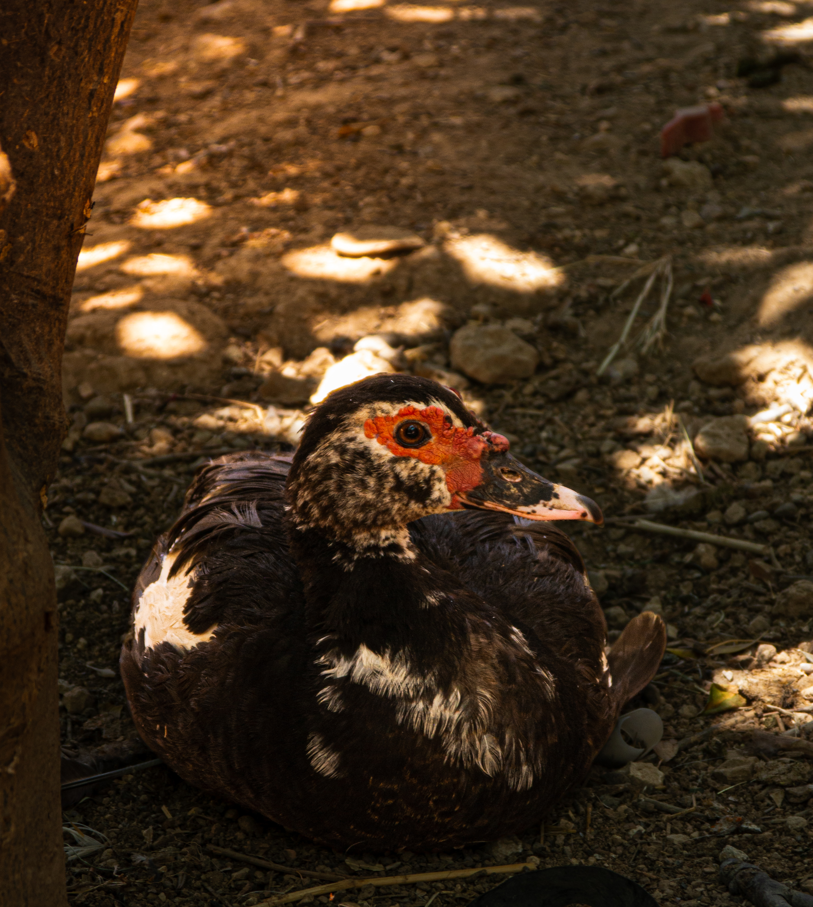
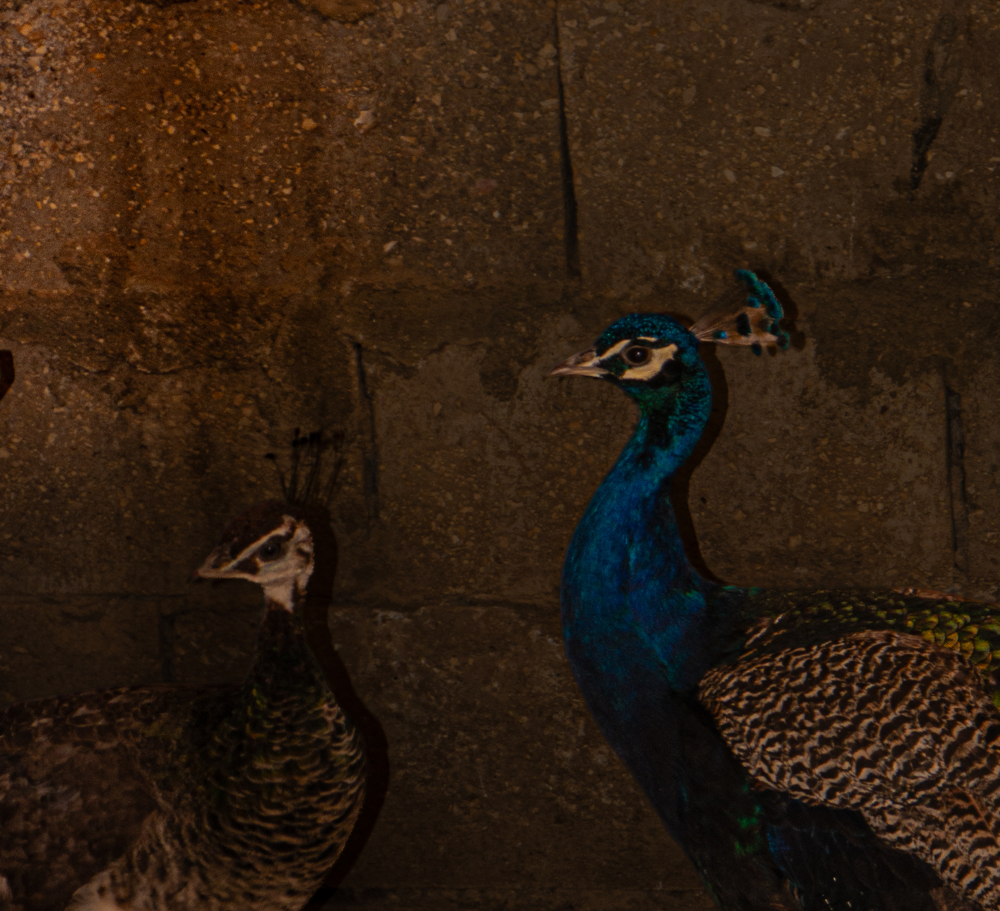
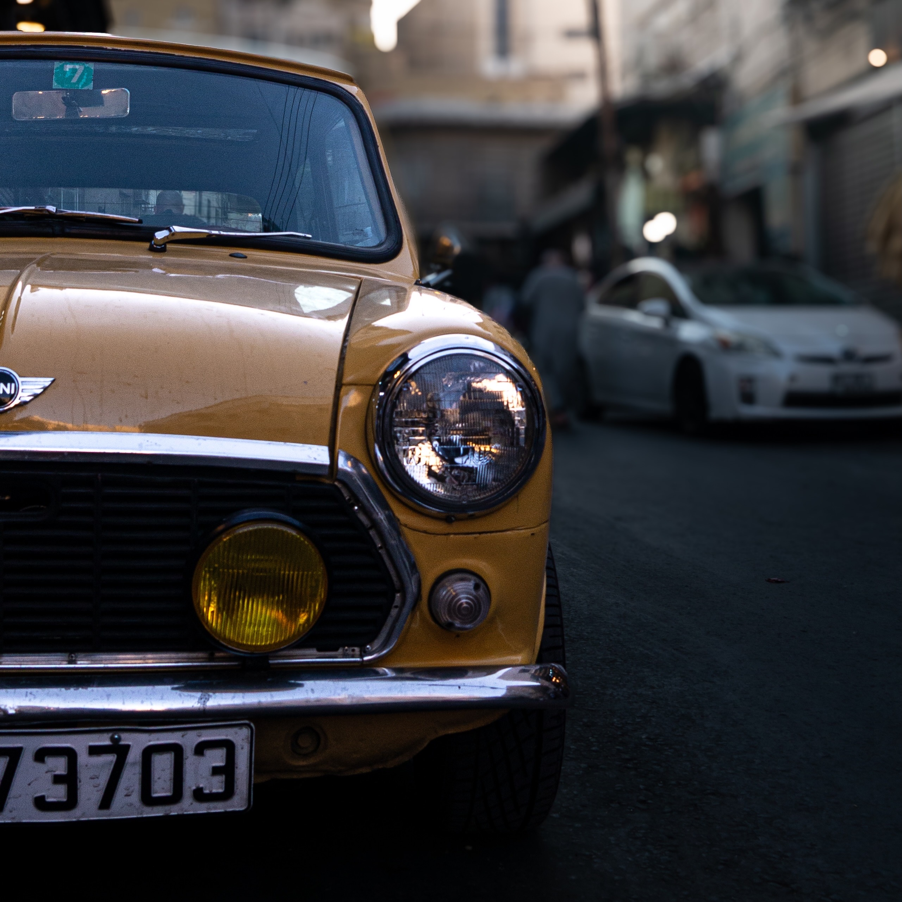
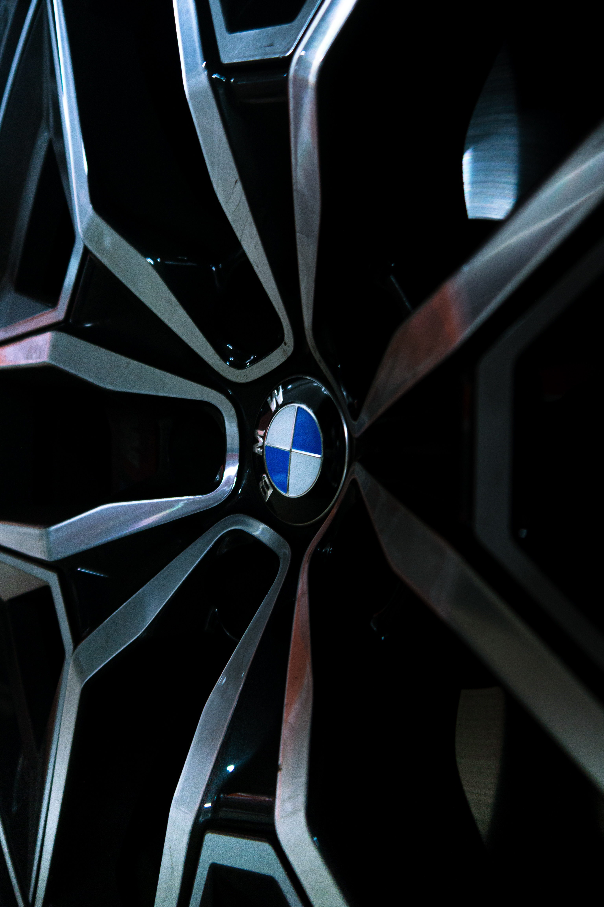
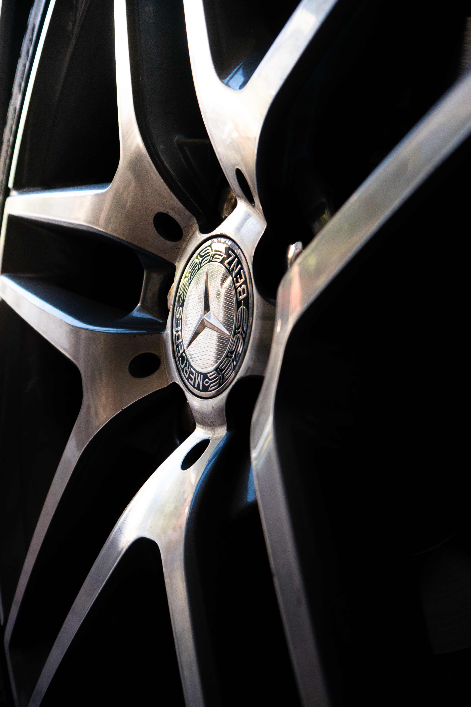

Wildlife

At Rest
Peace isn't always found in silence. Sometimes it's hidden in an afternoon nap, waiting for someone to notice.

Rest Between Shadows
A Muscovy duck resting beneath scattered sunlight, where quiet moments become unforgettable photographs.

Three Paths
Three geese standing together, each looking in different directions. A quiet reminder that even when we share the same place, every journey is our own.

Silent Royalty
A quiet moment between two peafowl, where vibrant color meets soft shadows. Sometimes the loudest beauty is found in complete silence.

Golden Hour
Bathed in warm light, the golden pheasant reveals the intricate patterns hidden within its feathers. A quiet reminder that nature often creates its finest art without asking to be noticed.

A Quiet Turn
With one final glance over its shoulder, the golden pheasant pauses before disappearing into the shadows. A fleeting moment that rewards patience.
Automotive

City Classic
A classic Mini resting between the busy streets of the city. Decades may pass, but timeless design never fades.

Precision
Every spoke leads the eye toward the iconic BMW roundel. A study in symmetry, precision, and the details that define automotive design.

The Star
Centered around the legendary three-pointed star, this close-up celebrates precision engineering and timeless elegance in every spoke.


The Emblem
A minimalist study of the iconic Mercedes-Benz emblem. Surrounded by negative space, the badge becomes the sole focus, proving that true luxury doesn't need to shout.
Unexpected Company
A quiet driveway, a polished Lexus, and an unexpected visitor. Sometimes the smallest detail transforms an ordinary scene into a story.

The Wait
Hidden beneath the city lights, the BMW waits in perfect symmetry. Clean geometry and quiet light transform an everyday parking garage into something cinematic.